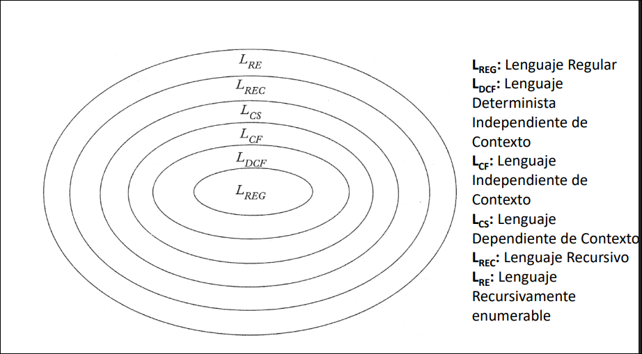

TALF · curso 3
1. Introducción · TALF
NOTA
Esta asignatura es una locura la puta mierda apuntes que tiene, menos mal que en prácticas nos salvan. Me molaría reestructurar todo para que tuviese un orden un poco más lógico, pero me da pereza.
1.1 Definición general
1.1 Definición General: ¿De qué va esto?
Definición Formal
La Teoría de Autómatas y Lenguajes Formales estudia modelos matemáticos para representar procesos de cálculo. Su objetivo es entender qué problemas pueden resolver los ordenadores y con qué eficiencia. Aborda dos preguntas clave:
- Decidibilidad: ¿Qué puede hacer un ordenador?
- Complejidad: ¿Con qué eficiencia puede hacerlo?
Nota del Tutor (El concepto real)
Piensa en esta asignatura como el "Diseño de Máquinas que leen cosas". Todo se reduce a un esquema básico:
- Input: Le das una cadena de texto a la máquina.
- Proceso: La máquina (el autómata) procesa símbolo a símbolo.
- Output: La máquina responde SÍ (Aceptado/Válido) o NO (Rechazado/Inválido).
1.2 El Ecosistema de la Teoría de Autómatas
1.1 El "Trío Sagrado": Lenguaje, Gramática y Máquina
Imagina que quieres preparar un plato específico. Necesitas tres elementos distintos pero conectados. Aquí veremos qué es cada uno y dónde se usan en la vida real:
1. El Lenguaje (El Plato Final)
Es el concepto abstracto. Es el conjunto de cadenas (palabras) que queremos aceptar como válidas.
- Definición: El objetivo final.
- Ejemplo: "El conjunto de todos los emails válidos" o "Todo el código C++ que funciona".
2. La Gramática (La Receta) [Sintaxis]
Son las reglas generativas. Te dicen cómo construir una cadena válida paso a paso. Es el ente "constructor".
- Función: Definir la estructura correcta.
- Uso real: Compiladores. Cuando VS Code te marca un error en rojo, es porque tu código rompió las reglas de la gramática del lenguaje.
3. El Autómata (El Crítico de Comida) [Reconocedor]
Es la máquina que verifica. Le das una cadena y te dice "Sí, pertenece al lenguaje" o "No, rechazada". Es el motor de búsqueda.
- Función: Buscar patrones y validar.
- Uso real: Ctrl+F en Word, validación de formularios web o el comando
grepen Linux (usando Expresiones Regulares para búsquedas compactas).
La Relación Fundamental:
Para cada tipo de Lenguaje, existe una Gramática que lo genera y una Máquina que lo reconoce. Son tres caras de la misma moneda.
1.3 El "Diccionario" de la Asignatura
Peligro de Examen: Confundir estos términos es la causa #1 de suspensos
| Concepto | Símbolo | Definición Formal | Analogía Práctica |
|---|---|---|---|
| Alfabeto | Conjunto finito y no vacío de símbolos (ej: |
Las piezas de Lego disponibles. | |
| Palabra | Secuencia finita de símbolos del alfabeto. | Una torre construida con esas piezas. | |
| Longitud | |w| | Número de símbolos de |
La altura de esa torre (nº de piezas). |
| Lenguaje | Conjunto de palabras ( |
La foto de la colección de torres válidas. |
1.4 Conceptos Críticos y Operaciones
1.4.1 El error más común: Cadena Vacía vs. Lenguaje Vacío
Es fundamental distinguir entre "tener una caja vacía" y "tener una caja con una hoja en blanco dentro".
-
Cadena Vacía (
o ): - Es una palabra que existe, pero no tiene símbolos.
- Su longitud es 0 (
). - Analogía: Un string vacío en programación
"".
-
Lenguaje Vacío (
): - Es un conjunto que no contiene ninguna palabra (ni siquiera la vacía).
- Analogía: Una carpeta de archivos vacía.
Regla de oro:
Un lenguaje que contiene una palabra (la vacía). NO está vacío. Un lenguaje sin palabras. ESTÁ vacío.
1.4.2 Operaciones Básicas
Al igual que sumamos números, aquí operamos con palabras y lenguajes.
Sobre Palabras (Cadenas):
- Concatenación (
): Pegar detrás de . OJO: El orden importa ( ). - Potencia (
): Repetir la cadena veces. (Ej: ). - Reflexión / Inversa (
o ): Leerla al revés (de derecha a izquierda).
Sobre Lenguajes (Conjuntos):
- Concatenación (
): Combina cada palabra del primer lenguaje con cada palabra del segundo. - Cierre de Kleene / Estrella (
): La operación más importante. - Representa repetir palabras del lenguaje cero o más veces.
- Siempre incluye la cadena vacía
. : Significa "El conjunto de todas las palabras posibles que se pueden formar con el alfabeto".
1.4.3 Determinismo
El determinismo es previsibilidad absoluta. En un sistema determinista, si conoces el estado actual y la entrada que llega, sabes con certeza matemática qué va a pasar después. No hay dudas, no hay elecciones.
El no determinismo es la capacidad de elegir o explorar múltiples futuros a la vez. Ante una misma situación, la máquina puede tener varias opciones válidas de movimiento (o ninguna).
1.5 La Jerarquía de Chomsky: Las "Muñecas Rusas"
Aquí es donde entra el lío de los nombres. No son categorías aisladas, son niveles de complejidad concéntricos.
- Regla de Oro: Cada nivel incluye a todos los anteriores (es un subconjunto estricto).
- Ejemplo: Todo lo que es Regular (Nivel 3) es TAMBIÉN Independiente del Contexto (Nivel 2), Sensible al Contexto (Nivel 1) y Rec. Enumerable (Nivel 0).
Vamos del más simple (restrictivo) al más potente (libre).
Nivel 3: Lo Regular (Sin Memoria)
Aquí la máquina es muy tonta. No tiene memoria auxiliar, solo sabe "en qué estado está ahora mismo".
- Lenguaje: Regular.
- Gramática: Regular (Lineal por la derecha o izquierda). Reglas muy rígidas (Lineal por la derecha o izquierda). Reglas muy rígidas (
o ). - Máquina: Autómata Finito (AFD / AFN).
- ¿Determinismo? EQUIVALENTE. Da igual si es determinista o no, tienen la misma potencia.
- Ejemplo Real: Validar un email, buscar con
Ctrl+F. - Ejemplo Matemático:
(cualquier número de 'a'), o números de dos cifras. - Limitación: No sabe contar indefinidamente (no distingue
).
Nivel 2: Independiente del Contexto (Memoria de Pila)
Aquí añadimos una memoria tipo "pila" (LIFO - Last In, First Out). Podemos guardar cosas, pero solo podemos leer la que está arriba del todo.
- Lenguaje: Independiente del Contexto (LIC).
- Gramática: Independiente del Contexto (GIC). Reglas tipo
(una variable cambia por cualquier cosa). - Máquina: Autómata con Pila (AP).
- Determinismo: Aquí NO son equivalentes.
- El AP No Determinista es el "jefe" del Nivel 2. Reconoce toda la clase de los Lenguajes Independientes del Contexto (LIC).
- El AP Determinista es menos potente (reconoce un subconjunto menor).Reconoce un subconjunto estricto: los Lenguajes Independientes del Contexto Deterministas.
- Ejemplo Real: La sintaxis de lenguajes de programación (Java, C, Python), HTML (etiquetas que se abren y cierran).
- Ejemplo Matemático:
(mismo número de a's que de b's). - Limitación: No puede comparar tres cosas a la vez (
).
- Determinismo: Aquí NO son equivalentes.
Nivel 1: Sensible al Contexto (Memoria Acotada)
Aquí la memoria es una cinta, podemos movernos y reescribir, pero no podemos usar más espacio del que ocupa la palabra de entrada.
- Lenguaje: Sensible al Contexto.
- Gramática: Sensible al Contexto (GSC). Reglas donde importa qué hay a los lados (
). - Máquina: Autómata Linealmente Acotado (ALA/LBA).
- Concepto clave: Es una MT con cinta limitada por muros a izquierda y derecha.
- Ejemplo Real: El lenguaje natural (la concordancia gramatical compleja en español o inglés).
- Ejemplo Matemático:
(tres conteos coordinados).
Nota
- ALA No Determinista: Reconoce los Lenguajes Sensibles al Contexto (Tipo 1 de Chomsky). Esta es la definición estándar que se suele usar.
- ALA Determinista: Reconoce los Lenguajes Sensibles al Contexto Deterministas (más limitados que los no deterministas).
Nivel 0: Recursivamente Enumerable (El poder total)
Aquí no hay límites. Memoria infinita. Si existe un algoritmo para calcularlo, está aquí.
- Lenguaje: Recursivamente Enumerable.
- Gramática: Irrestricta (Sin restricciones).
- Máquina: Máquina de Turing (MT).
- ¿Determinismo? EQUIVALENTE. El no determinismo no añade potencia, solo velocidad teórica (P vs NP).
- El Gran Peligro: La máquina podría no detenerse nunca (bucle infinito) si la palabra no es válida.
Dentro del Nivel 0, existe una subdivisión vital para aprobar las preguntas de Verdadero/Falso.
| Tipo de Lenguaje | ¿Qué hace la máquina si la palabra es VÁLIDA? | ¿Qué hace si la palabra es INVÁLIDA? | ¿Es seguro? |
|---|---|---|---|
| Recursivo (Decidible) | Para y dice SÍ. | Para y dice NO. | Sí, siempre responde. |
| Rec. Enumerable (Semi-decidible) | Para y dice SÍ. | Puede parar y decir NO... O quedarse en bucle infinito. | No, puede colgarse. |
1.6 Tabla Resumen Definitiva (La "Chuleta")
| Nivel Chomsky | Lenguaje | Máquina (Autómata) | Determinismo vs No Det. | Ejemplo Matemático Clave |
|---|---|---|---|---|
| Tipo 3 | Regular | Autómata Finito | Equivalentes | |
| Tipo 2 | Indep. Contexto | Autómata de Pila | DIFERENTES (El No-Det es más potente) | |
| Tipo 1 | Sensible Contexto | Linealmente Acotado | (Complejo, se asume No-Det) | |
| Tipo 0 | Rec. Enumerable | Máquina de Turing | Equivalentes | Cualquier algoritmo |
| Tipo de Máquina | ¿Es más potente la No Determinista? | Razón |
|---|---|---|
| Autómata Finito | NO (Son equivalentes) | Existe un algoritmo mecánico para convertir cualquier no determinista en uno determinista sin perder información. |
| Autómata de Pila | SÍ | El determinista está limitado (solo reconoce lenguajes sin ambigüedad). El no determinista reconoce todos los independientes del contexto. |
| Autómata Linealmente Acotado (ALA) | ¿? (Problema Abierto / Se asume que SÍ) | En teoría es una incógnita matemática no resuelta. Pero en la asignatura, el No Determinista es el que define los Lenguajes Sensibles al Contexto (Tipo 1). |
| Máquina de Turing | NO (Son equivalentes) | Cualquier cálculo de una MT no determinista puede ser simulado por una determinista (aunque tarde más tiempo). |
| Complejidad (P vs NP) | SÍ (En tiempo) | Aunque resuelven lo mismo, la No Determinista lo hace en tiempo polinómico (rápido), mientras que la determinista podría tardar siglos. |
 |